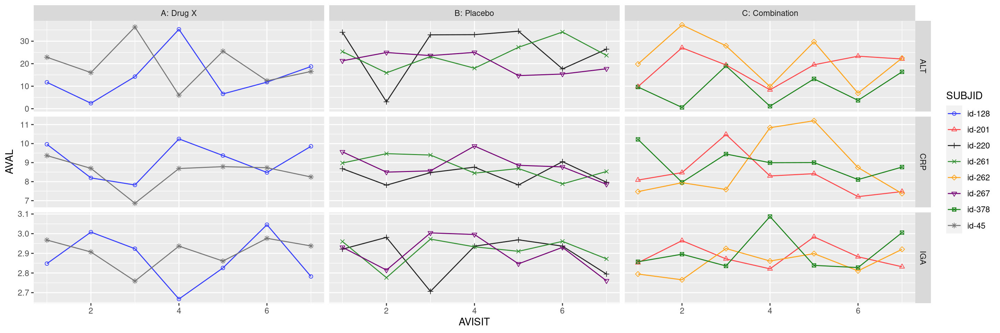
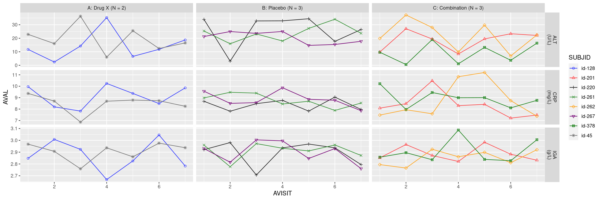

library(scda)library(tern)library(teal)library(teal.modules.clinical)library(ggplot2)library(dplyr)library(nestcolor)# Datasetsadsl <-synthetic_cdisc_dataset("latest", "adsl") %>%slice(1:8)adlb <-synthetic_cdisc_dataset("latest", "adlb") %>%filter(USUBJID %in% adsl$USUBJID)# Pre-processingadlb$AVISIT_txt <- adlb$AVISITadlb$AVISIT <-as.numeric(adlb$AVISIT)adlb$ARM_N <- adlb$ARMlevels(adlb$ARM_N) <-with(data = adlb,paste0(levels(ARM_N), " (N = ",tapply(SUBJID, ARM_N, function(x) length(unique(x))), ")" ))# Plot utilsnpch <-1:25npatients <-length(unique(adlb$SUBJID))pch <-c(rep(npch, times = npatients %/%length(npch)), npch[1:(npatients %%length(npch))])# Add the mean along with the 95% CI at every visit.mean_95_text <-"Mean +/- 95% CI"# Add the median and 95% CI as follows.median_95_text <-"Median +/- 95% CI"# Add the median and 95% CI as follows.median_80_text <-"Median +/- 80% CI"
Basic Plot
Code
# General mapping and "lattice" ("facet" in ggplot2 nomenclature).g1 <- {ggplot(data = adlb,mapping =aes(x = AVISIT, y = AVAL, colour = SUBJID, shape = SUBJID) ) +facet_grid(LBTESTCD ~ ARM, scales ="free_y") +scale_shape_manual(values = pch)}# Add points and lines.g1 <- g1 +geom_point()g1 <- g1 +geom_line()plot <- g1plot

Modifying Facets
The units describing rows of panes and the number of patients under each arm is specified by modifying facet_grid():
Code
# Include the units and the sample size N.g2 <- g1 +facet_grid(paste0(LBTESTCD, "\n(", AVALU, ")") ~ ARM_N,scales ="free_y")plot <- g2plot

Modifying X-Axis
The graphic elements are modified through usual ggplot2 functions. For instance, the x-axis could be improved as follows:
The functions stat_mean_ci and stat_median_ci from the tern package allow the addition of mean and/or median confidence intervals. The example below suggests a larger dataset, where the individual subject legend may not be relevant but the mean or the median are of special interest.
---title: LTG01subtitle: Lattice Plot of Laboratory Tests by Treatment Group Over Time---------------------------------------------------------------------------{{< include ../../test-utils/envir_hook.qmd >}}Lattice plots are natively handled by R, the examples below rely mostly on the package `ggplot2`.::: panel-tabset## Data Setup```{r setup, message=FALSE}#| code-fold: showlibrary(scda)library(tern)library(teal)library(teal.modules.clinical)library(ggplot2)library(dplyr)library(nestcolor)# Datasetsadsl <-synthetic_cdisc_dataset("latest", "adsl") %>%slice(1:8)adlb <-synthetic_cdisc_dataset("latest", "adlb") %>%filter(USUBJID %in% adsl$USUBJID)# Pre-processingadlb$AVISIT_txt <- adlb$AVISITadlb$AVISIT <-as.numeric(adlb$AVISIT)adlb$ARM_N <- adlb$ARMlevels(adlb$ARM_N) <-with(data = adlb,paste0(levels(ARM_N), " (N = ",tapply(SUBJID, ARM_N, function(x) length(unique(x))), ")" ))# Plot utilsnpch <-1:25npatients <-length(unique(adlb$SUBJID))pch <-c(rep(npch, times = npatients %/%length(npch)), npch[1:(npatients %%length(npch))])# Add the mean along with the 95% CI at every visit.mean_95_text <-"Mean +/- 95% CI"# Add the median and 95% CI as follows.median_95_text <-"Median +/- 95% CI"# Add the median and 95% CI as follows.median_80_text <-"Median +/- 80% CI"```## Plot of Liver Function Tests#### Basic Plot```{r plot1, test = list(plot_v1 = "plot")}# General mapping and "lattice" ("facet" in ggplot2 nomenclature).g1 <- {ggplot(data = adlb,mapping =aes(x = AVISIT, y = AVAL, colour = SUBJID, shape = SUBJID) ) +facet_grid(LBTESTCD ~ ARM, scales ="free_y") +scale_shape_manual(values = pch)}# Add points and lines.g1 <- g1 +geom_point()g1 <- g1 +geom_line()plot <- g1plot```#### Modifying FacetsThe units describing rows of panes and the number of patients under each arm is specified by modifying `facet_grid()`:```{r plot2, test = list(plot_v2 = "plot")}# Include the units and the sample size N.g2 <- g1 +facet_grid(paste0(LBTESTCD, "\n(", AVALU, ")") ~ ARM_N,scales ="free_y")plot <- g2plot```#### Modifying X-AxisThe graphic elements are modified through usual `ggplot2` functions.For instance, the x-axis could be improved as follows:```{r plot3, test = list(plot_v3 = "g3")}g3 <- g2 +theme(axis.text.x =element_text(angle =45, hjust =1),axis.title =element_blank()) +scale_x_continuous(breaks = adlb$AVISIT, labels = adlb$AVISIT_txt)plot <- g3plot```## Plot of Liver Function Tests <br/> Including Mean, Median, and 95% CIsThe functions `stat_mean_ci` and `stat_median_ci` from the `tern` package allow the addition of mean and/or median confidence intervals.The example below suggests a larger dataset, where the individual subject legend may not be relevant but the mean or the median are of special interest.#### Pre-Processing```{r pre-processing}#| code-fold: show# Datasetsadsl <-synthetic_cdisc_dataset("latest", "adsl") %>%slice(1:40)adlb <-synthetic_cdisc_dataset("latest", "adlb") %>%filter(USUBJID %in% adsl$USUBJID)# Pre-processingadlb$AVISIT_txt <- adlb$AVISITadlb$AVISIT <-as.numeric(adlb$AVISIT)adlb$ARM_N <- adlb$ARMlevels(adlb$ARM_N) <-with(data = adlb,paste0(levels(ARM_N), " (N = ",tapply(SUBJID, ARM_N, function(x) length(unique(x))), ")" ))# Plot utilsnpch <-1:25npatients <-length(unique(adlb$SUBJID))pch <-c(rep(npch, times = npatients %/%length(npch)), npch[1:(npatients %%length(npch))])```#### Basic Plot```{r plot4, test = list(plot_v4 = "plot")}# General mapping and "lattice" ("facet" in ggplot2 nomenclature)g4 <- {ggplot(data = adlb,mapping =aes(x = AVISIT, y = AVAL, colour = SUBJID, shape = SUBJID) ) +facet_grid(LBTESTCD ~ ARM_N, scales ="free_y") +scale_shape_manual(values = pch) +scale_color_manual(values =rep(getOption("ggplot2.discrete.colour"), 2))}# Add points and lines.# Note that with so many patients, legend might not be useful and transparency# is advisable.g4 <- g4 +geom_point(alpha = .3)g4 <- g4 +geom_line(alpha = .3)g4 <- g4 +guides(colour ="none", shape ="none")g4 <- g4 +theme(axis.text.x =element_text(angle =45, hjust =1),axis.title =element_blank())g4 <- g4 +scale_x_continuous(breaks = adlb$AVISIT, labels = adlb$AVISIT_txt)plot <- g4plot```#### Adding Mean```{r plot51, test = list(plot_v51 = "plot")}g51 <- g4 +stat_summary(fun = mean, linewidth =1, geom ="line",aes(group =1, linetype = mean_95_text))g51 <- g51 +stat_summary(fun.data = tern::stat_mean_ci, geom ="errorbar",aes(group =1, linetype = mean_95_text))plot <- g51plot```#### Adding Median```{r plot52, test = list(plot_v52 = "plot")}# Instead of a mean, the median could be more relevant.g52 <- g51 +stat_summary(fun = median, linewidth =1, geom ="line",aes(group =1, linetype = median_95_text))g52 <- g52 +stat_summary(fun.data = tern::stat_median_ci, geom ="errorbar",aes(group =1, linetype = median_95_text))plot <- g52 +guides(linetype =guide_legend(title ="Aggregate"))plot```#### Changing Confidence Level```{r plot53, test = list(plot_v53 = "plot")}# Change the confidence level of interval for the median.# Note: check `?stat_mean_ci()` and `?stat_median_ci()` for further fine tuning.g53 <- g4 +stat_summary(fun = median, linewidth =1, geom ="line",aes(group =1, linetype = median_80_text))g53 <- g53 +stat_summary(fun.data =function(x) tern::stat_median_ci(x, conf_level =0.8),geom ="errorbar", aes(group =1, linetype = median_80_text))plot <- g53plot```{{< include ../../test-utils/save_results.qmd >}}## Teal```{r teal, message=FALSE, opts.label='skip_if_testing'}#| code-fold: show# In progress```{{< include ../../si.qmd >}}:::